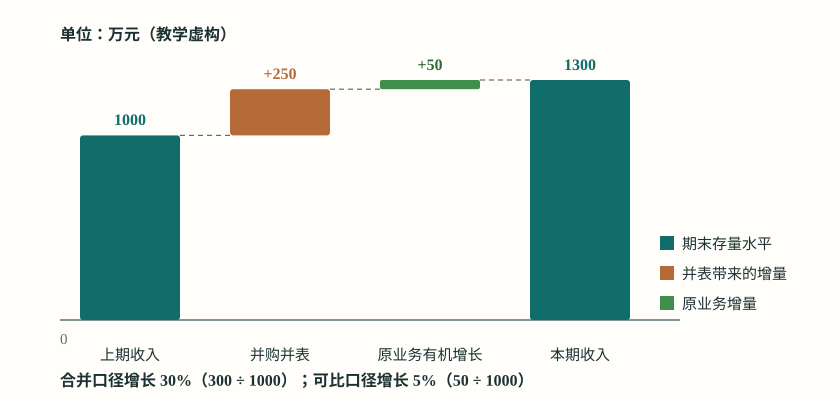
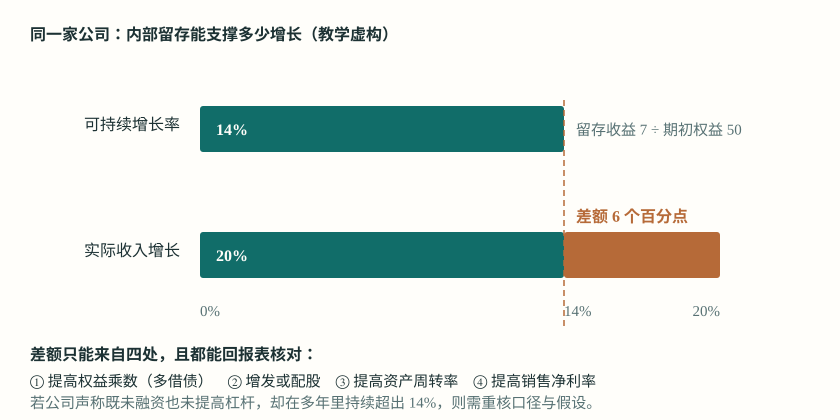

成长能力：有机增长与可持续增长率
营收增长 30% 听起来很好，但如果其中 25 个百分点来自并购并表、有机增长只有 5%，那就是两种完全不同的生意。本章教你把增长率拆开、复算，并判断它能撑多久。
增长从哪里来？
假设一家教学虚构公司 J 报告：本期营业收入 1,300 万元，上期 1,000 万元，同比增长 30%。只看这个数字，它像一家高速成长的公司。但附注说明：上一年度收购的一家子公司在本期首次全年并表，贡献收入 250 万元；剔除该并表因素后，原有业务的收入只从 1,000 万元变成 1,050 万元。
于是同一份报表里存在两个都正确、但含义完全不同的增长率：合并口径增长率 30%（1,300 ÷ 1,000 − 1），以及可比口径（有机）增长率 5%（50 ÷ 1,000）。增长能力分析的第一步不是算增长率，而是先问清“这个增长由谁贡献”。

并表本身不是问题：它是会计准则对企业合并的正常处理。但它带来三个必须单独检查的后果：收购对价形成的商誉、业绩承诺期内标的公司自身的盈利质量，以及合并期间的可比性——本期包含标的公司 12 个月，上期可能只包含 3 个月，跨期比较因此被口径放大或缩小。
所以本章的分析顺序是：先还原可比口径，再判断增长的来源（量、价、并表、汇率），最后才讨论它能持续多久以及价格是否已经反映。
把增长率拆开看
营业收入增长率的基础公式是：本期营业收入减上期营业收入，再除以上期营业收入。这个公式无法区分以下几种来源，而它们的含义完全不同：
- 销量增长：单位数增加。在单价和单位成本不变时，销售收入与毛利同向增长。
- 价格增长：提价或产品结构上移。它直接改善毛利率，但受客户议价与替代品约束，通常有天花板。
- 合并范围变化：新设、收购、处置子公司，或同一控制下企业合并的追溯处理。
- 汇率折算：境外经营的收入按不同期间汇率折算，即使本币收入不变，报表收入也会变。
- 总额法与净额法口径：同一笔贸易业务，公司作为主要责任人按总额确认，还是作为代理人按净额确认，收入规模差异巨大。
把这几项逐一核实，才能判断“增长”是否来自公司自身的经营能力。核实的地方在附注，不在正文数字：合并范围变更说明、分部报告、主要产品的销量与单价、以及收入确认政策（总额法/净额法）。
有机增长
同一合并范围下，原有业务靠销量、单价或产品结构实现的增长。可直接与毛利率、单位成本、客户数量对比验证。它也可能因行业景气或一次性订单而偏高，不是永续增长的保证。
并购增长
通过并表获得的收入。它同时带来商誉、可辨认无形资产和整合成本。需要单独检查：对价分配、业绩承诺条款、标的公司自身现金流，以及商誉减值测试所依据的假设。
口径陷阱：如果本期与上期的合并范围不同，“同比增长”已经不是可比口径的同比增长。把并表当期的非完整年度也直接年化，会把周期性或季节性误读成高成长。
利润增长的质量
净利润增长率比营收增长率更容易被误解，因为它上面叠了好几层项目。先分清三个层级：归母净利润（属于母公司股东的份额）、扣除非经常性损益后的归母净利润（剔除了不可持续项目）、以及综合收益总额（包含不能重分类进损益的项目）。三个数字可以给出完全不同方向的“增长”。
比较时建议固定比较的口径，并逐项核对：
- 营业利润增长率：反映经营活动本身的盈利能力变化。不能把“营业利润 = 毛利 − 四费”当成定义；中国利潦表中还有税金及附加、其他收益、信用减值损失、投资收益等项目。
- 扣非归母净利润增长率：政府补助、资产处置收益、公允价值变动等项目的金额与持续性需在附注中核对。
- 单位成本与费用率：毛利率提升与费用率下降都能抬升利润增速，需要判断是效率改善、规模效应，还是一次性降价采购或费用递延。
若利润增速持续高于收入增速，最常见的三类解释是：产品结构与毛利改善（经营改善）、会计估计变更或减值转回（未来适用或当期确认）、以及非经常性损益（不可重复）。三者对应的可持续性不同，验证方法也不同：前者看单位毛利与同行业比，中者看变更披露与影响额，后者看扣非差额。
最后一步是把利润与现金对齐。净利润与经营活动现金流量的差额，可能来自应收应付、存货等营运资本变动，也可能来自收入确认时点与真实回款周期的差异。利润增长而没有相应的现金回款，不是一个结论，而是一个需要跟进的调查线索。
无绝对信号：扣非增速连续多年低于净利润增速，提示利润里非经常性项目占比在上升，值得逐一核对；它本身不构成造假证据。相反，一次性折旧摊销或诉讼支出也会压低扣非利润。先看项目名称和金额，再判断性质。
可持续增长率与外部融资
可持续增长率（Sustainable Growth Rate）回答一个具体问题：在不增发新股、不改变分红政策、不改变资本结构的前提下，仅靠内部留存收益，收入最多能长多快？
为什么两个式子相等？
把 ROE 写成“净利润 ÷ 期初所有者权益”，把留存收益写成“净利润 ×（1 − 分红率）”，两式相除即得。推导的前提是分子分母用同一期间、同一合并范围，并用期初权益而非期末权益，否则两个式子不再相等。

用一个可以手工复算的算例验证这个等式。数据为教学虚构，单位统一为亿元：
| 项目 | 数值 | 计算 |
|---|---|---|
| 当期归母净利润 | 10 | — |
| 期初所有者权益 | 50 | — |
| 净资产收益率 ROE | 20% | 10 ÷ 50 |
| 现金分红 | 3 | 分红率 3 ÷ 10 = 30% |
| 留存收益 | 7 | 10 − 3 |
| 可持续增长率 | 14% | 20% × (1 − 30%) = 7 ÷ 50 |
若该公司实际收入增长 20%，高于 14% 的 SGR，差额只能从四类渠道来：提高权益乘数（多借债）、增发或配股（壮大权益基数）、提高资产周转率（同样资产做更多生意）、提高销售净利率（同样收入赚更多钱）。每一步都可回报表验证：前者看资产负债率和有息负债，中者看股本与资本公积变动，后两者看周转率与净利率的趋势。
三个必须声明的限制：其一，SGR 是会计恒等式推出来的约束条件，不是未来增长的预测值；其二，ROE 或所有者权益为负时，比率失去经济含义，不得拿来比较；其三，用期初权益与平均权益得到的结果不同，必须在同一组对比中固定口径。
增长质量工作台
下面的数据为教学虚构，与上文算例是两组独立的输入。启用脚本后结果实时更新；未启用脚本时，可按本节公式手工复算：有机增长 =（本期收入 − 并表贡献 − 上期收入）÷ 上期收入，SGR =（净利润 ÷ 期初权益）×（1 − 分红 ÷ 净利润），PEG = 市盈率 ÷ 预期盈利增速（百分数）。
修改数据，即时复算
单位、币种与期间必须保持一致；预期增速是输入假设，不是公司事实。
增长与估值：PEG 的适用边界
高增长不等于好投资。如果价格已经包含了更高的增长预期，公司即使实现了高增长，投资者也未必获利。PEG 是衡量两者关系的常用工具：
例：市盈率 25 倍、预期年增速 15%，则 PEG = 25 ÷ 15 ≈ 1.67。
分母用哪一种增长率，直接决定了结果：当年增速、过往 3 年复合增速、卖方一致预期，三者可以相差一倍以上。PEG 的常见经验区间（低于 1 视为偏低、高于 2 视为偏高）只是便于排序的惯例，不是会计准则或监管规定，也不能单独用来下结论。以下几种情形下 PEG 基本不适用：
- 分母为负或接近零：亏损公司或增速在 0 附近的公司，PEG 无经济含义。
- 增速来自低基数或一次性项目：去年减值、今年无减值，会造出很高的“增速”。
- 资本开支与杠杆差异大：同等增速下，重资产、高负债公司应得更低倍数。
- 分红政策不同：分红少的公司靠留存支撑同样增速，股东回报未必更好。
- 周期行业在盈利峰顶：峰顶利润作分母，PE 会显得很低，PEG 也会跟着失真。
因此实用做法是：把 PEG 当作对增长率假设的敏感性检查，给出区间而非点值，并在页码上写明每个分子、分母的口径与期间。
列报口径变化提示：财政部《企业会计准则第 30 号——财务报表列报》（财会〔2026〕11 号）按主体分三批执行：境内外两地上市及符合规定的境外上市主体为 2027-01-01，其他境内上市主体为 2029-01-01，非上市主体为 2030-01-01，均允许提前执行。它不意味着所有中国企业同时在 2027 年切换。境外 IFRS 18 也是 2027-01-01 起适用（允许提前应用），两套准则不得混用。
信号矩阵与自测
下表把常见的“增长异常”写成四列：观察到的现象、可能的含义、同样能解释它的反例、以及用来区分两者的证据。任何单行都不足以得出结论。
| 观察到的现象 | 可能的含义 | 反例或替代解释 | 需核对的证据 |
|---|---|---|---|
| 合并口径增速远高于可比口径增速 | 增长主要由并表贡献 | 上期只并表部分月份，本期为完整年度 | 合并范围变更附注、并表起止日 |
| 净利润增速持续高于收入增速 | 毛利或费用率改善、非经常性项目增加 | 上期低基数，或本期一次性降价采购 | 毛利率与费用率趋势、非经常性损益明细 |
| 实际增速持续高于 SGR 而权益乘数上升 | 增长由负债支撑 | 周转率与净利率同时改善 | 有息负债增速、周转率、净利率 |
| 增长伴随应收周转天数上升 | 确认的收入尚未形成回款 | 信用政策放宽换市场份额，或有季节性 | 应收账龄、信用政策变更、期后回款 |
| PEG 明显低于 1 | 增速未被价格充分反映 | 分子用了峰顶利润，或预期增速已被下调 | 盈利口径（归母/扣非）、预测来源与日期 |
自测一：一家公司营收增长 40%、有机增长 6%，是否就是“伪成长”？
不能直接这么定。如果收购已披露、对价分配合理、标的公司业务与主业相关且持续贡献现金，它仍是一家在扩张的公司，只是成长模式是“收购整合型”而非“内生型”。需单独评估商誉、业绩承诺与整合能力，并用合适的估值口径。
自测二：实际增速低于 SGR，是否意味着公司安全？
不意味着。低于 SGR 只说明没有突破内部融资约束，它可能同时意味着需求走弱、份额丢失或留存收益被低效资产占用。SGR 描述的是约束上限，不是质量评价。
结论：成长能力分析的可交付结果是三句话——增长来自哪里、能持续多久、价格已经反映了多少。三句都要能回报表找到对应数字。
依据与边界
本页所有数字、公司名称与算例均为教学虚构，用于演示公式与口径；不对应任何实际上市公司或报告期，也不构成投资建议。
公式与判断框架属于作者讲解；有关合并范围、列报结构与披露时限的强制要求以下列官方文件为准。